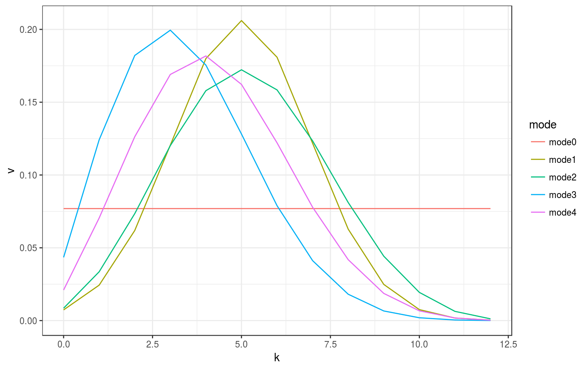
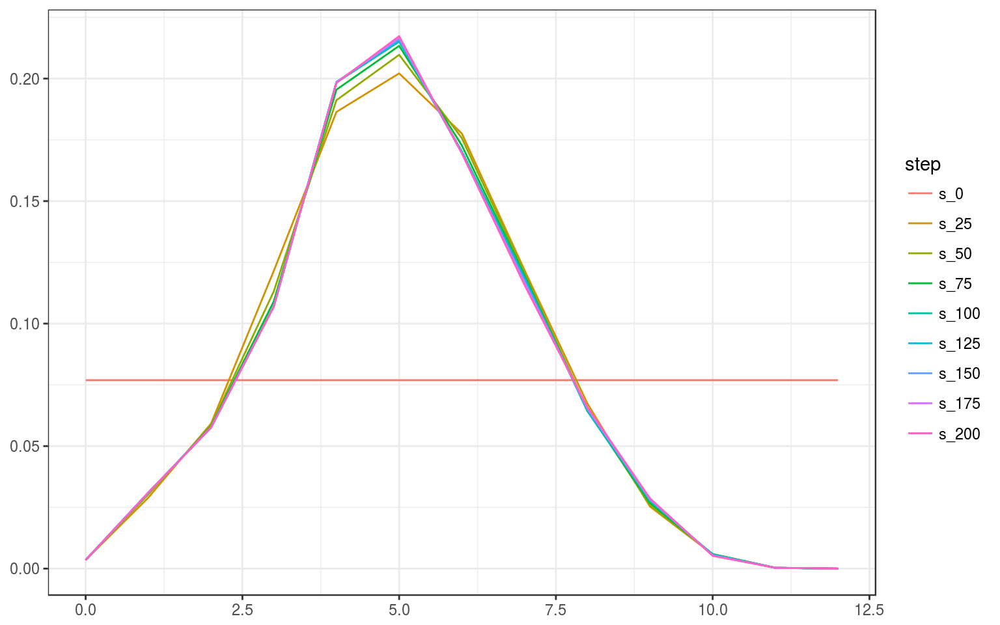
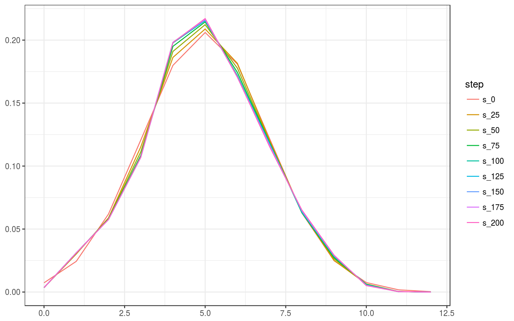
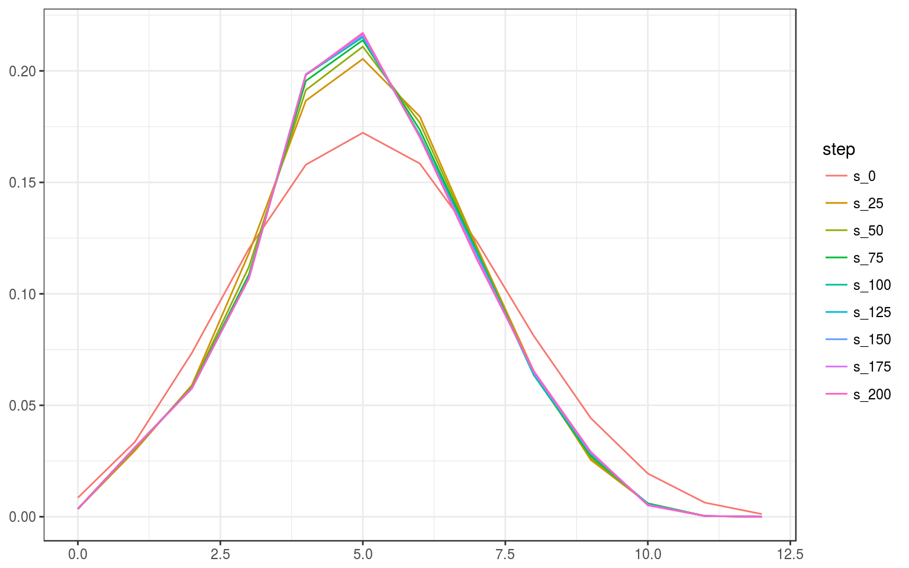
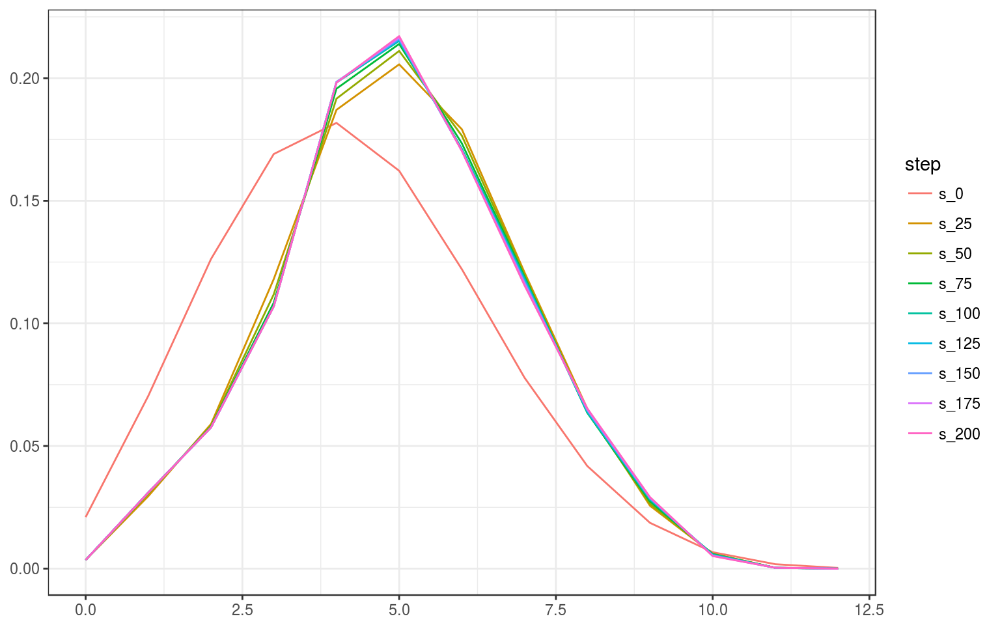
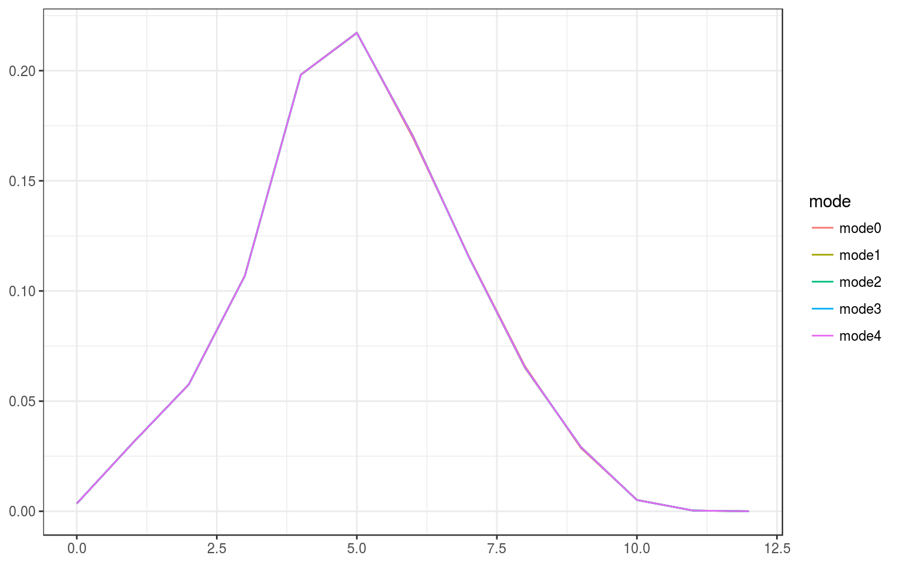
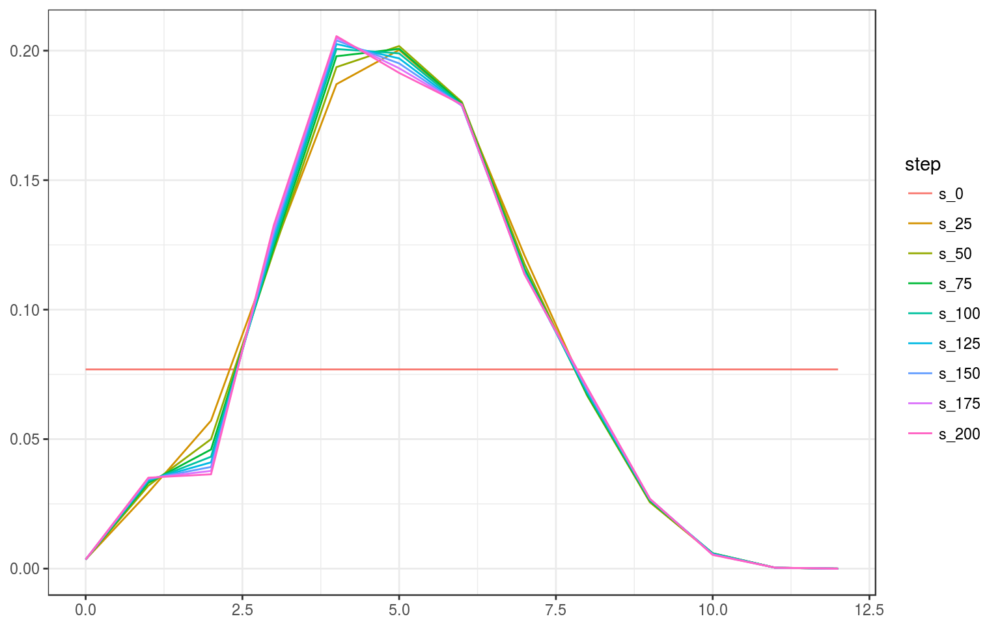

This note describes an approach to reconstruct the intrinsic volumes of a closed convex cone from samples of the associated bivariate chi-bar-squared distribution. The approach is based on the expectation-maximization algorithm and implemented in estim_em. We assume familiarity with the first of the two other vignettes:
Other vignettes:
We use the following notation:
Concretely, if \(C\) is a polyhedral cone then we define \(Z\) as the dimension of the face of \(C\) such that \(\Pi_C(g)\) lies in its relative interior. This is well-defined, as \(C\) decomposes into a disjoint union of the relative interiors of its faces. For theoretical purposes we may assume without loss of generality that the underlying cone is polyhedral, as any closed convex cone can be arbitrarily well approximated by polyhedral cones.
Conditioning \(X\) and \(Y\) on \(Z\) yields independent random variables \(X\mid Z\) and \(Y\mid Z\), which are \(\chi^2\)-distributed with \(Z\) and \(d-Z\) degrees of freedom, respectively. Here and in the following we use the convention that \(\chi_0^2\) denotes the Dirac measure supported in \(0\).
We assume to have sampled data: \((X_1,Y_1),\ldots,(X_N,Y_N)\) denote iid copies of \((X,Y)\) and we assume that they took the sample values \((x_1,y_1),\ldots,(x_N,y_N)\). The general goal is to reconstruct the vector of intrinsic volumes \(v=(v_0,\ldots,v_d)\) from this data.
The latent variable \(Z\) is not entirely “latent”, or hidden. Indeed, we have the following equivalences \[ Z=d\iff g\in \text{int}(C) \stackrel{\text{a.s.}}{\iff} Y=0 ,\qquad Z=0\iff g\in \text{int}(C^\circ) \stackrel{\text{a.s.}}{\iff} X=0 , \] where a.s. stands for almost surely (with probability one). Moreover, if \(Y=0\), then the value of \(X\) is just a draw from the \(\chi_d^2\) distribution, and similarly for \(X=0\). What this shows is that those sample data \((x_i,y_i)\) with \(x_i=0\) or \(y_i=0\) should be regarded as noise, and hence should be discarded.
In order to formalize this step we define the following mixed continuous-discrete distribution: for given weight vector \(v=(v_0,\ldots,v_d)\), \(v\geq0\), \(\sum_{k=0}^d v_k=1\), define the distribution \[ f_v(x,y) = v_d\, \delta(-1,0) + v_0\, \delta(0,-1) + \sum_{k=1}^{d-1} v_k f_k(x) f_{d-k}(y) , \] where \(\delta\) denotes the (bivariate) Dirac delta, and \(f_k(x)\) denotes the density of the chi-squared distribution. Note that for positive \(x,y\) this distribution coincides with the distribution of the bivariate chi-bar-squared distribution with weight vector \(v\). The corresponding cumulative distribution function (cdf) is given by \[ F_v(x,y) = \begin{cases} v_d & \text{if } -1\leq x<0\leq y , \\ v_0 & \text{if } -1\leq y<0\leq x , \\ v_0 + v_d + \sum_{k=1}^{d-1} v_k F_k(x)F_{d-k}(y) & \text{if } (x,y)\geq0 , \\ 0 & \text{else} , \end{cases} \] where \(F_k(x)\) denotes the cdf of the chi-squared distribution.
The step of “discarding” the sample points \((x_i,y_i)\) for which \(x_i=0\) or \(y_i=0\) then amounts to applying the map the sends \((x,0)\) to \((-1,0)\), that sends \((0,y)\) to \((0,-1)\), and that keeps points with positive components unchanged. The sample of the bivariate chi-bar-squared distribution then becomes a sample of the modified bivariate chi-bar-squared distribution.
To save notation we assume that the sample points are indexed such that \((x_1,y_1),\ldots,(x_{\bar N},y_{\bar N})\) lie in the positive quadrant, \(\bar N\leq N\), and the remaining points lie on the axes. Furthermore, we define the two proportions \[ p = \frac{\left|\{i\mid y_i=0\}\right|}{N} ,\quad q = \frac{\left|\{i\mid x_i=0\}\right|}{N} . \]
See the vignette on intrinsic volumes for the context of this connection.
The sample data of \(X\) and \(Y\) thus yield two natural estimates for both \(\delta\) and \(\text{var}\), which we combine as follows:
\[ \left.\begin{array}{c} \displaystyle\hat\delta_{\text{prim}} = \frac{1}{N}\sum_{i=1}^N x_i \\ \displaystyle\hat\delta_{\text{pol}} = d-\frac{1}{N}\sum_{i=1}^N y_i \end{array} \right\} \quad\hat\delta := \frac{\hat\delta_{\text{prim}}+\hat\delta_{\text{pol}}}{2} , \]
\[ \left.\begin{array}{c}
\displaystyle\widehat{\text{var}}_{\text{prim}} = \frac{1}{N}\sum_{i=1}^N x_i^2 - (\hat\delta+1)^2+1
\\ \displaystyle\widehat{\text{var}}_{\text{pol}} = \frac{1}{N}\sum_{i=1}^N y_i^2 - (d-\hat\delta+1)^2+1
\end{array} \right\} \quad \widehat{\text{var}} = \sqrt{ \widehat{\text{var}}_{\text{prim}} \widehat{\text{var}}_{\text{pol}} } . \] These formulas are implemented in estim_statdim_var.
We propose the following ways to choose a starting point for the iterative algorithms to find the intrinsic volumes:
These formulas are implemented in init_v.
Example computations: We analyze a randomly chosen ellipsoidal cone:
d <-12
set.seed(1234)
A <- matrix(rnorm(d^2),d,d)
ellips_semiax(A)
#> [1] 1.965675989 1.551430100 1.392832384 1.181547315 1.030489491
#> [6] 0.944529743 0.775232956 0.641000545 0.271741231 0.204502118
#> [11] 0.008808626Sample from the corresponding bivariate chi-bar-squared distribution, and use this to estimate statistical dimension and variance and find initial estimates of intrinsic volumes:
N <- 1e5
E <- ellips_rbichibarsq(N,A)
str(E)
#> List of 2
#> $ semiax : num [1:11] 1.97 1.55 1.39 1.18 1.03 ...
#> $ samples: num [1:100000, 1:2] 6.5 1.8 6.45 2.45 8.33 ...
# scatter plot of the sample
ggplot(as_tibble(E$samples), aes(V1,V2)) + geom_point(alpha=.02) +
theme_bw() +
theme(axis.title.x=element_blank(),axis.title.y=element_blank())mom <- estim_statdim_var(d, E$samples); mom
#> $delta
#> [1] 5.009417
#>
#> $var
#> [1] 3.680233
v_est <- list( mode0 = init_ivols(d, 0),
mode1 = init_ivols(d, 1, mom$delta, mom$var),
mode2 = init_ivols(d, 2, mom$delta),
mode3 = init_ivols(d, 3, mom$delta, mom$var),
mode4 = init_ivols(d, 4, mom$delta, mom$var) )
tib_plot <- as_tibble(v_est) %>%
add_column(k=0:d,.before=1) %>% gather(mode,v,2:6)
ggplot(tib_plot,aes(x=k,y=v,color=mode)) +
geom_line() + theme_bw()
We derive the likelihood function of the modified bivariate chi-bar-squared distribution, as explained above. Recall that the proportions \(p\) and \(q\) are defined via \(p=\frac{\left|\{i\mid y_i=0\}\right|}{N}\) and \(q=\frac{\left|\{i\mid x_i=0\}\right|}{N}\), and are point estimates for \(v_d(C)\) and \(v_0(C)\), respectively. The data on which we base our estimation thus has the following form:
We obtain the following formula for the likelihood of the given data: \[ L(v\mid \mathbf{x},\mathbf{y}) = v_d^{Np} v_0^{Nq}
\prod_{i=1}^{\bar N}\sum_{k=1}^{d-1} v_k f_{ik} , \] where \(f_{ik}\) denote the density values \[ f_{ik} := f_k(x_i)f_{d-k}(y_i) ,\quad k=1,\ldots,d-1,\; i=1,\ldots,\bar N , \] with \(f_k(x)\) denoting the density of the chi-squared distribution, \[ f_k(x)=\frac{1}{2^{k/2}\Gamma(k/2)}x^{k/2-1}e^{-x/2} . \] The function prepare_em evaluates the sample data in this regard; calling this function outside the EM algorithm allows to skip this step on multiple evaluations of the EM algorithm or related functions.
where \((z_i=k)=1\) if \(z_i=k\) and zero else. For numerical reasons we work with the rescaled log-likelihood functions
\[\begin{align*} \frac{1}{N} \log L(v\mid \mathbf{x},\mathbf{y}) & = p \log v_d + q \log v_0 + \frac{1}{N}\sum_{i=1}^{\bar N} \log\Big(\sum_{k=1}^{d-1} v_k f_{ik}\Big) , \\ \frac{1}{N} \log L(v\mid \mathbf{x},\mathbf{y},\mathbf{z}) & = p \log v_d + q \log v_0 + \frac{1}{N}\sum_{i=1}^{\bar N} \sum_{k=1}^{d-1} (z_i=k) \big( \log v_k + \log f_{ik} \big) . \end{align*}\]The rescaled log-likelihood function \(\frac{1}{N} \log L(v\mid \mathbf{x},\mathbf{y})\) is implemented in loglike_ivols.
Example computations: We continue analyzing the above defined ellipsoidal cone. First, we prepare the data for multiple executions of the log-likelihood function and of the EM algorithm.
out_prep <- prepare_em(d, E$samples)Now evaluate the log-likelihood function in the simple estimate of the intrinsic volumes based on the moments.
loglike_ivols( v_est$mode0 , out_prep )
#> [1] -5.545065
loglike_ivols( v_est$mode1 , out_prep )
#> [1] -5.24238
loglike_ivols( v_est$mode2 , out_prep )
#> [1] -5.251429
loglike_ivols( v_est$mode3 , out_prep )
#> [1] -5.414345
loglike_ivols( v_est$mode4 , out_prep )
#> [1] -5.287737The log-concavity inequalities are the inequalities \(v_k^2\geq v_{k-1}v_{k+1}\) for \(k=1,\ldots,d-1\), or equivalently, \[ 2\log v_k - \log v_{k-1} - \log v_{k+1} \geq 0 . \] At this moment, the validity of these inequalities for general closed convex cones is an open conjecture. But for subclasses, like products of circular cones, they are known to hold, and there is some evidence that they hold in general. See the vignette on conic intrinsic volumes for a discussion. Assuming log-concavity of the conic intrinsic volumes greatly helps the EM algorithm to converge to a sensible estimate.
There are two natural ways in which log-concavity may be enforced:
Both of these methods are supported in estim_em.
The expectation maximization (EM) algorithm works by maximizing the conditional expectation of the maximum likelihood method – expectation with respect to the latent variable – given the current iterate for the parameter that is to be found.
For the situation at hand we obtain the conditional probabilities for the latent variable as follows: \[ p(Z_i=k\mid X_i=x_i, Y_i=y_i) = \frac{p(Z_i=k)p(X_i=x_i,Y_i=y_i\mid Z_i=k)} {p(X_i=x_i,Y_i=y_i)} = \frac{v_kf_{ik}}{\sum_{j=1}^{d-1}v_jf_{ij}} . \] Hence, denoting the current estimate of \(v\) by \(v^{(t)}\), the next iterate of the EM algorithm is found by maximizing the expression \[\begin{align*} & \underset{\mathbf{Z}\mid \mathbf{x},\mathbf{y},v^{(t)}}{\text{E}} \big[\tfrac{1}{N}\log L(v\mid\mathbf{x},\mathbf{y},\mathbf{Z})\big] \\ & = p \log v_d + q \log v_0 + \frac{1}{N}\sum_{i=1}^{\bar N} \sum_{k=1}^{d-1} \frac{v_k^{(t)}f_{ik}}{\sum_{j=1}^{d-1} v_j^{(t)}f_{ij}} \big( \log v_k + \log f_{ik} \big) \end{align*}\]as a function in \(v\). Apparently, the final summand can be dropped as it only contributes a constant. Furthermore, replacing the log-likelihood function by the log-concavity penalized version \(G_\lambda(v,\mathbf{z})\), we see that the next iterate \(v^{(t+1)}\) is found by maximizing the function \[ (p-\lambda_{d-1}) \log v_d + (q-\lambda_1) \log v_0 + \sum_{k=1}^{d-1} \Bigg( \frac{1}{N}\sum_{i=1}^{\bar N} \frac{v_k^{(t)}f_{ik}}{\sum_{j=1}^{d-1} v_j^{(t)}f_{ij}} + 2\lambda_k -\lambda_{k-1}-\lambda_{k+1}\Bigg) \log v_k \] subject to \(v_0,\ldots,v_d\geq0\), \(v_0+v_2+\dots=v_1+v_3+\dots=\frac12\). As long as the coefficients of \(\log v_k\) are nonnegative, this is a convex problem and, as a separable convex program1, can be easily solved by MOSEK.2
The log-concavity inequalities \(2\log v_k-\log v_{k-1}-\log v_{k+1}\geq c_k\;(\geq0)\) could be modelled as constraints in the above separable optimization problem. But including these will violate the convexity assumptions right away, so the current implementation of the algorithm does not proceed in this way. Instead, after computing the iterate in the normal way, the algorithm will project the vector of the logarithms \(u_k=\log v_k\), \(k=0,\ldots,d\), onto the polyhedral set \(\{ u\in\text{R}^{d+1}\mid 2 u_k - u_{k-1} - u_{k+1} \geq c_k \}\) and then rescale the resulting vector so that \(v_0^{(t+1)}+v_2^{(t+1)}+\dots=v_1^{(t+1)}+v_3^{(t+1)}+\dots=\frac12\).
Example computations: We reconstruct the intrinsic volumes from the sample data. For this we run the EM algorithm with the different starting points for 200 iterations, and display the every twenty-fifth iteration.
em0 <- estim_em( d, E$samples, N=200, v_init=v_est$mode0, data=out_prep )
em1 <- estim_em( d, E$samples, N=200, v_init=v_est$mode1, data=out_prep )
em2 <- estim_em( d, E$samples, N=200, v_init=v_est$mode2, data=out_prep )
em3 <- estim_em( d, E$samples, N=200, v_init=v_est$mode3, data=out_prep )
em4 <- estim_em( d, E$samples, N=200, v_init=v_est$mode4, data=out_prep )
# prepare plots
tib_plot0 <- as_tibble( t(em0$iterates[1+25*(0:8), ]) ) %>%
`colnames<-`(paste0("s_",25*(0:8))) %>%
add_column(k=0:d,.before=1) %>% gather(step,value,2:10)
tib_plot1 <- as_tibble( t(em1$iterates[1+25*(0:8), ]) ) %>%
`colnames<-`(paste0("s_",25*(0:8))) %>%
add_column(k=0:d,.before=1) %>% gather(step,value,2:10)
tib_plot2 <- as_tibble( t(em2$iterates[1+25*(0:8), ]) ) %>%
`colnames<-`(paste0("s_",25*(0:8))) %>%
add_column(k=0:d,.before=1) %>% gather(step,value,2:10)
tib_plot3 <- as_tibble( t(em3$iterates[1+25*(0:8), ]) ) %>%
`colnames<-`(paste0("s_",25*(0:8))) %>%
add_column(k=0:d,.before=1) %>% gather(step,value,2:10)
tib_plot4 <- as_tibble( t(em4$iterates[1+25*(0:8), ]) ) %>%
`colnames<-`(paste0("s_",25*(0:8))) %>%
add_column(k=0:d,.before=1) %>% gather(step,value,2:10)
tib_plot0$step <- factor(tib_plot0$step, levels = paste0("s_",25*(0:8)))
tib_plot1$step <- factor(tib_plot1$step, levels = paste0("s_",25*(0:8)))
tib_plot2$step <- factor(tib_plot2$step, levels = paste0("s_",25*(0:8)))
tib_plot3$step <- factor(tib_plot3$step, levels = paste0("s_",25*(0:8)))
tib_plot4$step <- factor(tib_plot4$step, levels = paste0("s_",25*(0:8)))
# plot mode 0
ggplot(tib_plot0,aes(x=k,y=value,color=step)) +
geom_line() + theme_bw() +
theme(axis.title.x=element_blank(), axis.title.y=element_blank())
# plot mode 1
ggplot(tib_plot1,aes(x=k,y=value,color=step)) +
geom_line() + theme_bw() +
theme(axis.title.x=element_blank(), axis.title.y=element_blank())
# plot mode 2
ggplot(tib_plot2,aes(x=k,y=value,color=step)) +
geom_line() + theme_bw() +
theme(axis.title.x=element_blank(), axis.title.y=element_blank())
# plot mode 3
ggplot(tib_plot3,aes(x=k,y=value,color=step)) +
geom_line() + theme_bw() +
theme(axis.title.x=element_blank(), axis.title.y=element_blank())# plot mode 4
ggplot(tib_plot4,aes(x=k,y=value,color=step)) +
geom_line() + theme_bw() +
theme(axis.title.x=element_blank(), axis.title.y=element_blank())
Comparing the 200th iterates of the different runs shows that they have pretty much converged to the same estimate.
# prepare plot
tib_plot_comp <- tibble( mode0=em0$iterates[201, ],
mode1=em1$iterates[201, ],
mode2=em2$iterates[201, ],
mode3=em3$iterates[201, ],
mode4=em4$iterates[201, ] ) %>%
add_column(k=0:d,.before=1) %>% gather(mode,value,2:6)
# plot 200th iterate of different runs
ggplot(tib_plot_comp,aes(x=k,y=value,color=mode)) +
geom_line() + theme_bw() +
theme(axis.title.x=element_blank(), axis.title.y=element_blank())
To assess the influence of log-concavity we also have a look at the iterates of the EM algorithm without enforced log-concavity.
em_no_logconc <- estim_em( d, E$samples, N=200, v_init=v_est$mode0, data=out_prep,
no_of_lcc_projections=0 )
# prepare plot
tib_plot_no_logconc <- as_tibble( t(em_no_logconc$iterates[1+25*(0:8), ]) ) %>%
`colnames<-`(paste0("s_",25*(0:8))) %>%
add_column(k=0:d,.before=1) %>% gather(step,value,2:10)
tib_plot_no_logconc$step <- factor(tib_plot_no_logconc$step, levels = paste0("s_",25*(0:8)))
ggplot(tib_plot_no_logconc,aes(x=k,y=value,color=step)) +
geom_line() + theme_bw() +
theme(axis.title.x=element_blank(), axis.title.y=element_blank())
It is worth noting that as the algorithm progresses the log-concavity gets increasingly violated leading to bad estimates of the intrinsic volumes. So assuming log-concavity seems crucial for obtaining reasonable estimates of the intrinsic volumes.
For more details see the MOSEK documentation for SCopt interface.↩
The implementation of this step in estim_em is such that MOSEK is called with the user-defined values for \(\lambda\). These values will be reduced if MOSEK returns an error because of nonconvexity; they might eventually be dropped entirely (in which case the program becomes convex and is solved by MOSEK). It thus could happen that although the penalty terms \(\lambda\) have been set to positive values, they are being ignored by (parts of) the algorithm.↩